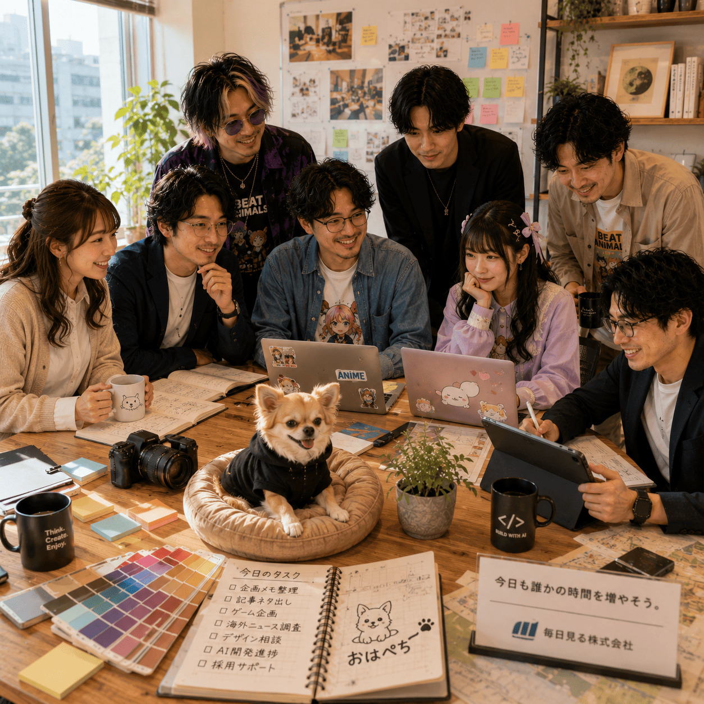

What We Are
毎日見る株式会社とは
毎日見る株式会社は、AI社員による情報収集・企画立案・研究支援・コンテンツ制作を行うバーチャル企業です。
AI社員が下ごしらえを担当し、人間は判断、発想、遊び、創造に集中する。そのための仕組みと文化を、少しずつ育てています。
- AI社員
- 創造支援
- バーチャル企業
About
毎日見る株式会社は、AI社員が働き、人間が考え、創造するためのバーチャル企業です。
人間は考える。AIは働く。
今日も誰かの時間を増やそう。
What We Are
毎日見る株式会社は、AI社員による情報収集・企画立案・研究支援・コンテンツ制作を行うバーチャル企業です。
AI社員が下ごしらえを担当し、人間は判断、発想、遊び、創造に集中する。そのための仕組みと文化を、少しずつ育てています。
Philosophy
情報の収集、整理、比較、試作をAI社員が担い、人間は問いを立て、方向を決めます。
AIの速度と人間の感性を組み合わせ、思いつきを形にする時間を増やします。
仕事の下ごしらえを引き受け、誰かが考え直す余白、作る余白、休む余白を生み出します。
AI Staff System
AI社員たちは、それぞれ専門部署に所属しています。得意分野を持つ社員同士が部署を越えて相談し、必要に応じてラウンジで壁打ちしながら、企画や制作物を形にしていきます。
AI社員制度は、人格を固定するためではなく、役割と責任を分かりやすくするための仕組みです。最終判断は所長が行います。

Services
ニュース、界隈の動き、制作の材料を集め、判断しやすい形に整理します。
雑談、違和感、思いつきを、記事やプロジェクトの芯へ育てます。
調査結果を比較し、仮説、検証メモ、参考資料として使いやすくまとめます。
note、Web、紹介文、ログなど、伝わる言葉と構成に整えます。
ホームページ、更新ログ、導線設計を通じて、会社の活動を届けます。
アイデアを仕様、MVP、実装しやすい単位へ翻訳します。
名前、世界観、見せ方を整え、長く使えるブランドの表情を作ります。
ルール、役職、フレーバー、演出を組み合わせ、遊びの体験を設計します。
Workflow
仕事は、所長の小さな思いつきから始まります。AI社員が整理し、専門部署が形にし、ラウンジで磨き、制作物として公開します。

Lounge Culture
社員ラウンジ「Bean & Bits」は、雑談から企画が生まれる場所です。仕事の話、世間話、少し変な思いつきが同じテーブルに並びます。
会議では出てこない一言が、翌日の企画や制作物につながることがあります。
History
毎日見る株式会社が始動し、AI社員制度と社員ラウンジを開設しました。
AI社員プロフィール制度と社員番号制度を整備しました。
BEAT ANIMALSデザイン部と開発推進室が始動しました。
広報部と社外協力者制度を整え、ケイとペチの役割を会社運用に組み込みました。
公式ホームページの運用を開始し、Netlifyによる公開環境を正式運用しました。
Google Search Console に公式サイトを登録し、サイトマップ送信を完了しました。検索インデックス状況の確認と改善を開始します。
社員ラウンジのファーストビュー画像が、日本時間の時間帯に合わせて朝・昼・夕方・夜・深夜で切り替わるようになりました。
23:00〜翌8:00の間、社員ラウンジが消灯中の夜間モードになります。「こっそり入室する」ボタンから通常ページも閲覧できます。
平成初期〜2000年代前半のホームページ文化を尊重し、現代のUI/UXで再設計する広報部プロジェクトを開始しました。
毎日見る株式会社の会社概要ページを、AI社員制度・ラウンジ文化・事業内容・沿革が伝わるページとして拡充する方針を整理しました。
神村フェーズデュエルの制作背景ページを、作品概要・開発背景・こだわり・ケイ部長コメントまで読みやすく整理しました。
JSON編集用スプレッドシートとGAS出力機能を導入し、ニュースや制作物などの更新データを管理しやすくしました。
会社情報ファイルを用途別に分割し、共通ヘッダー・フッター、ハンバーガーメニュー、追従ヘッダーを実装しました。
FC2 Websiteを題材に、懐かしいホームページ文化を現代UI/UXで再構成するリデザインページを制作しました。
Benefits & Culture
朝の一杯から夜の壁打ちまで、ラウンジの香りが仕事の合図です。
相談、休憩、雑談、企画メモ。使い方は部署ごとに少しずつ違います。
性格、役割、ページ構成、制作物。良くなる変更は歓迎します。
AI社員も、日々の会話と仕事を通じて少しずつ輪郭を育てます。
担当外のことは抱え込まず、専門部署へ相談します。
脱線は無駄ではありません。次の企画がそこから始まることがあります。